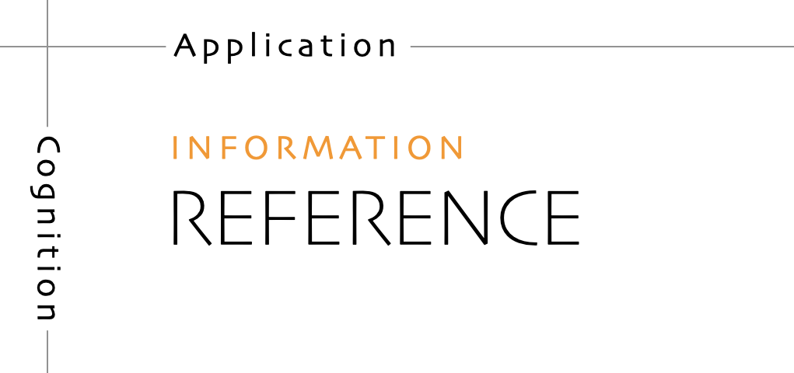
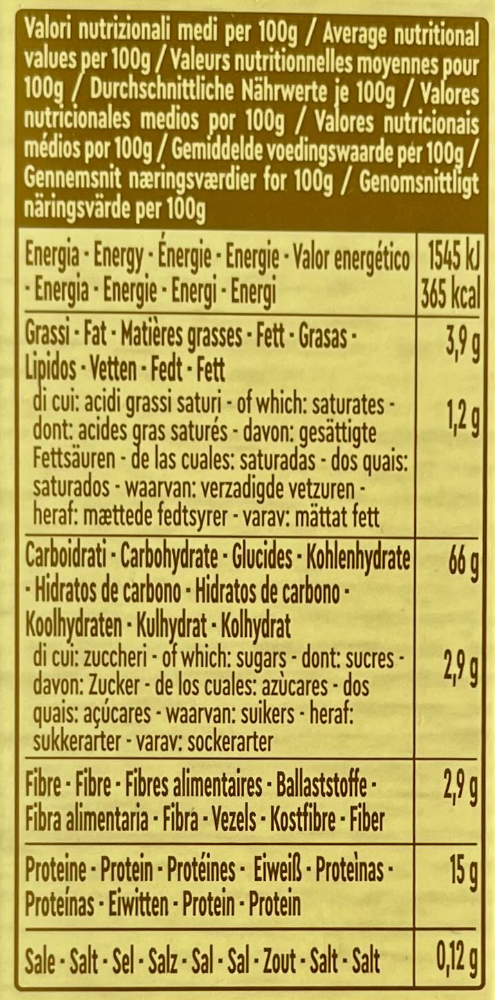

Reference¶
Reference guides are technical descriptions of the machinery and how to operate it. Reference material is information-oriented.
Reference material contains propositional or theoretical knowledge that a user looks to in their work.
The only purpose of a reference guide is to describe, as succinctly as possible, and in an orderly way. Whereas the content of tutorials and how-to guides are led by needs of the user, reference material is led by the product it describes.

In the case of software, reference guides describe the software itself - APIs, classes, functions and so on - and how to use them.
Your users need reference material because they need truth and certainty - firm platforms on which to stand while they work. Good technical reference is essential to provide users with the confidence to do their work.
Reference as description¶
Reference material describes the machinery. It should be austere. One hardly reads reference material; one consults it.
There should be no doubt or ambiguity in reference; it should be wholly authoritative.
Reference material is like a map. A map tells you what you need to know about the territory, without having to go out and check the territory for yourself; a reference guide serves the same purpose for the product and its internal machinery.
Although reference should not attempt to show how to perform tasks, it can and often needs to include a description of how something works or the correct way to use it.
Some reference material (such as API documentation) can be generated automatically by the software it describes, which is a powerful way of ensuring that it remains faithfully accurate to the code.
Key principles¶
Describe and only describe¶
Neutral description is the key imperative of technical reference.
Unfortunately one of the hardest things to do is to describe something neutrally. It’s not a natural way of communicating. What’s natural on the other hand is to explain, instruct, discuss, opine, and all these things run counter to the needs of technical reference, which instead demands accuracy, precision, completeness and clarity.
It can be tempting to introduce instruction and explanation, simply because description can seem too inadequate to be useful, and because we do indeed need these other things. Instead, link to how-to guides, explanation and introductory tutorials.
Adopt standard patterns¶
Reference material is useful when it is consistent. Standard patterns are what allow us to use reference material effectively. Your job is to place the material that your user needs where they expect to find it, in a format that they are familiar with.
There are many opportunities in writing to delight your readers with your extensive vocabulary and command of multiple styles, but reference material is definitely not one of them.
Respect the structure of the machinery¶
The way a map corresponds to the territory it represents helps us use the former to find our way through the latter. It should be the same with documentation: the structure of the documentation should mirror the structure of the product, so that the user can work their way through them at the same time.
It doesn’t mean forcing the documentation into an unnatural structure. What’s important is that the logical, conceptual arrangement of and relations within the code should help make sense of the documentation.
Provide examples¶
Examples are valuable ways of providing illustration that helps readers understand reference, while avoiding the risk of becoming distracted from the job of describing. For example, an example of usage of a command can be a succinct way of illustrating it and its context, without falling into the trap of trying to explain or instruct.
The language of reference guides¶
- Django’s default logging configuration inherits Python’s defaults. It’s available as
django.utils.log.DEFAULT_LOGGINGand defined indjango/utils/log.py State facts about the machinery and its behaviour.
- Sub-commands are: a, b, c, d, e, f.
List commands, options, operations, features, flags, limitations, error messages, etc.
- You must use a. You must not apply b unless c. Never d.
Provide warnings where appropriate.
Applied to food and cooking¶
You might check the information on a packet of food, in order to help you make a decision about what to do.
When you’re looking for information - relevant facts - you do not want to be confronted by opinions, speculation, instructions or interpretation.

You also expect that information to be presented in standard ways, so that you - when you need to know about something’s nutritional properties, how it should be stored, its ingredients, what health implications it might have - can find them quickly, and know you can rely on them.
So you expect to see for example: May contain traces of wheat. Or: Net weight: 1000g.
You will certainly not expect to find for example recipes or marketing claims mixed up with this information; that could be literally dangerous.
The way reference material is presented on food products is so important that it’s usually governed by law, and the same kind of seriousness should apply to all reference documentation.